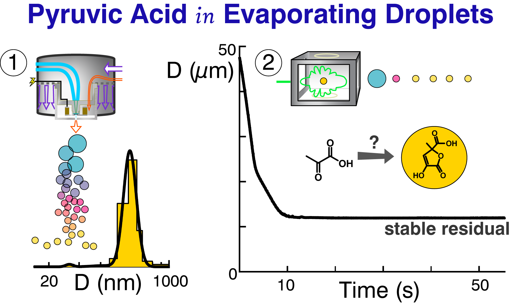
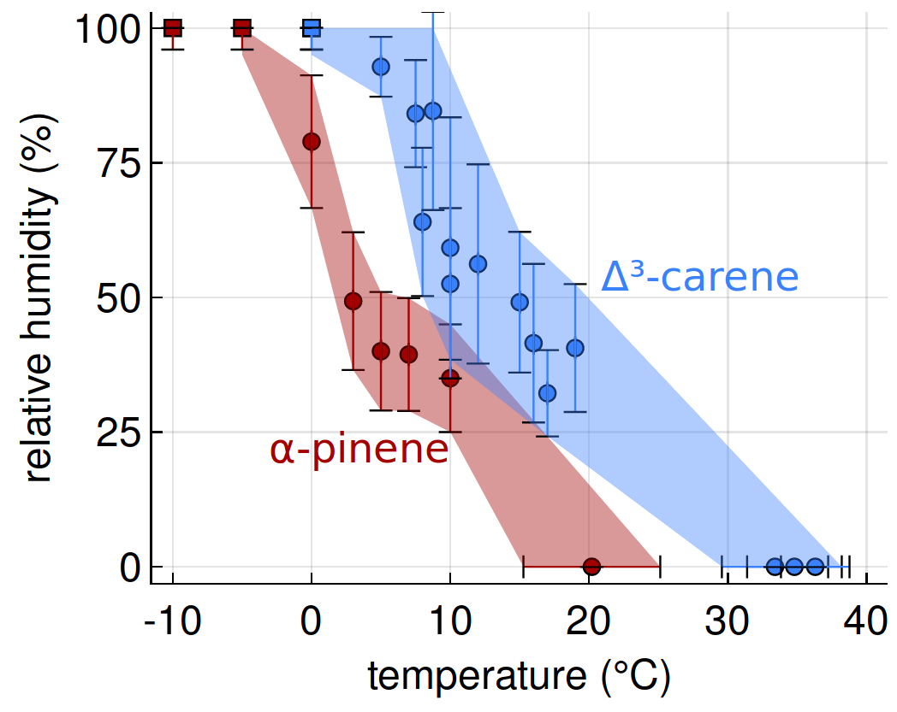
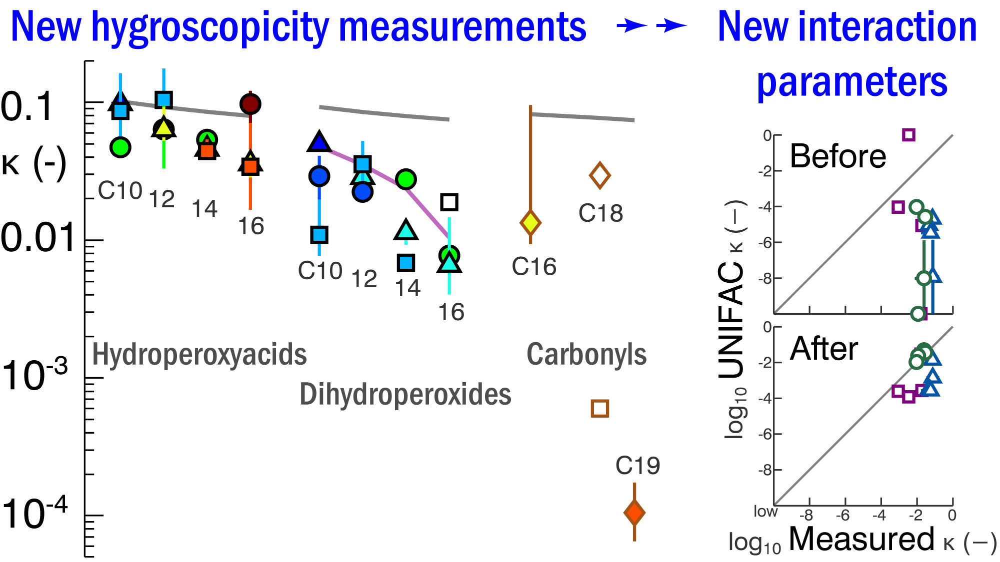
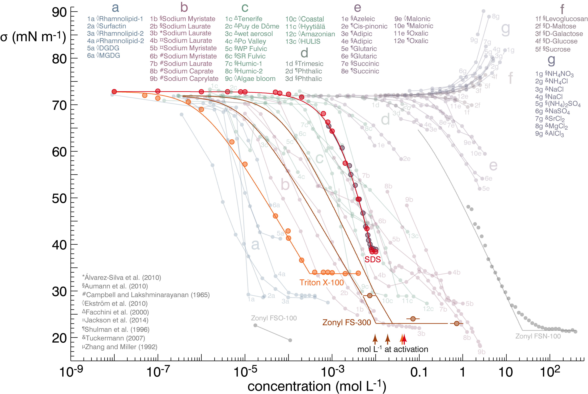

Environmental Aerosol Processes
You can also view these on Google Scholar.In preparation
Petters, SS, Y Zhang, T Cui, C Nichols, J Yan, Y-N Escobar, G Nipp, I Jaspers, J Thornburg and JD Surratt, Gas-particle partitioning of unflavored e-cigarette carrier liquids, propylene glycol and glycerol, in prep..
Petters, SS, T Cui, Z Zhang, A Gold, VF McNeill, JD Surratt and BJ Turpin, Formation of oganosulfates from dark reactions of isoprene epoxydiols in cloud and fog water, in prep..
Publications
[15] Petters, SS, TG Hilditch, S Tomaz, REH Miles, JP Reid, and BJ Turpin, Volatility change during droplet evaporation of pyruvic acid (2020), ACS Earth Space Chem., doi 10.1021/acsearthspacechem.0c00044.

| Pyruvic acid is a highly reactive carbonyl that can indergo dimerization reactions in evaporating droplets.[15] |
[14] Escobar, Y-N, G Nipp, T Cui, SS Petters, JD Surratt, I Jaspers, In-vitro toxicity and chemical characterization of aerosol derived from electronic cigarette humectants using a newly developed exposure system (2020), Chem. Res. Toxicol., doi 10.1021/acs.chemrestox.9b00490.
[13] Rothfuss, NE, SS Petters, WM Champion, AP Grieshop, and MD Petters (2019), Characterization of a dimer preparation method for nanoscale organic aerosol, Aerosol Sci. Technol. 53(9), 998-1011, doi 10.1080/02786826.2019.1623379.
[12] Petters, SS, SM Kreidenweis, AP Grieshop, PJ Ziemann, and MD Petters (2019), Temperature- and humidity-dependent phase states of secondary organic aerosols, Geophys. Res. Lett. 46(2), 1005-1013, doi 10.1029/2018GL080563.

| The viscosity of humidified secondary organic aerosol (SOA) has a very steep temperature dependence between −10° and 10° Celcius.[12] |
[11] DeMott, PJ, O Möhler, DJ Cziczo, N Hiranuma, MD Petters, SS Petters, F Belosi, HG Bingemer, SD Brooks, C Budke, M Burkert-Kohn, KN Collier, A Danielczok, O Eppers, L Felgitsch, S Garimella, H Grothe, P Herenz, TCJ Hill, K Höhler, ZA Kanji, A Kiselev, T Koop, TB Kristensen, K Krüger, G Kulkarni, EJT Levin, BJ Murray, A Nicosia, D O'Sullivan, A Peckhaus, MJ Polen, HC Price, N Reicher, DA Rothenberg, Y Rudich, G Santachiara, T Schiebel, J Schrod, TM Seifried, F Stratmann, RC Sullivan, KJ Suski1, M Szakáll, HP Taylor, R Ullrich, J Vergara-Temprado, R Wagner, TF Whale, D Weber, A Welti, TW Wilson, MJ Wolf, and J Zenker (2018), The Fifth International Workshop on Ice Nucleation phase 2 (FIN-02): laboratory intercomparison of ice nucleation measurements, Atmos. Meas. Tech. 11, 6231-6257, doi 10.5194/amt-11-6231-2018.
[10] Marsh, A, SS Petters, NE Rothfuss, G Rovelli, YC Song, JP Reid, and MD Petters (2018), Amorphous phase state diagrams and viscosity of ternary aqueous organic/organic and inorganic/organic mixtures, Phys. Chem. Chem. Phys. 20, 15086-15097, doi 10.1039/C8CP00760H.
[9] Petters, SS, D Pagonis, MS Claflin, EJT Levin, MD Petters, PJ Ziemann, and SM Kreidenweis (2017), Hygroscopicity of organic compounds as a function of carbon chain length and carboxyl, hydroperoxy, and carbonyl functional groups, J. Phys. Chem. A 121(27), 5164-5174, doi 10.1021/acs.jpca.7b04114.

| Hydroperoxides are more active as cloud condensation nuclei (CCN) than implied by prior water-hydroperoxide interaction coefficients. We used CCN measurements for a series of synthesized hydroperoxide compounds to provide updated parameters for CCN activity modeling via the widely-adopted UNIFAC model.[9] |
[8] Petters, SS and MD Petters (2016), Surfactant effect on cloud condensation nuclei for two-component internally mixed aerosols, J. Geophys. Res. 121(4), 1878-1895, doi 10.1002/2015JD024090.
[8a] Petters, MD, SR Suda (Petters), and SI Christensen (2013), The role of dynamic surface tension in cloud droplet activation, AIP Conf. Proc. 1527(1), 801-807, doi 10.1063/1.4803393.

| The cloud condensation nuclei (CCN) activity of particles containing strong surfactants deviates strongly from predictions accounting only for surface tension. Predictions accounting for bulk-to-surface partitioning of surfactant molecules performed better, however there remain limitations in the ability of simple models to describe surfactant behavior in aerosols.[8,8a] |